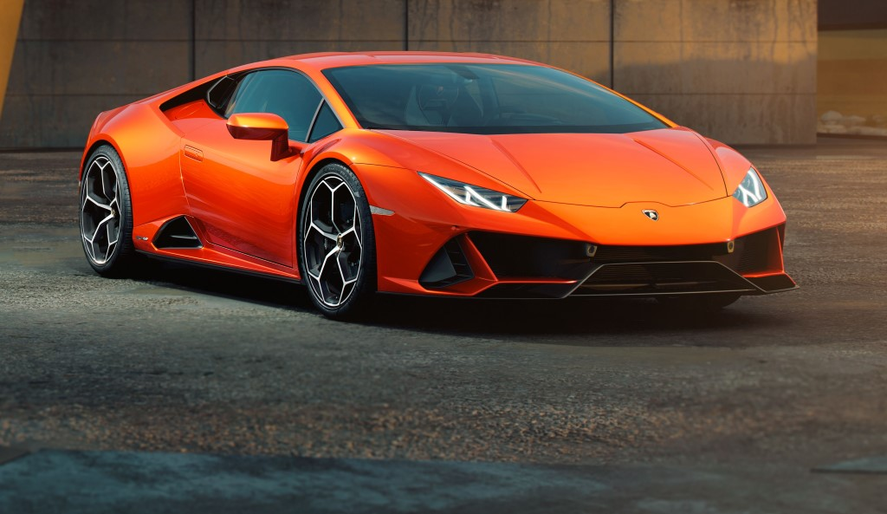
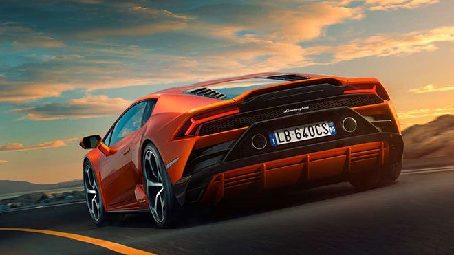

Lamborghini Huracán Evo
 En derin duygularınıza şekil vermek için yaratılmış bu özel otomobil ailesinin tüm yeni modellerini keşfedin. Lamborghini'nin gücünün en yüksek ifadesini İtalyan el sanatlarının seçkin ayrıntılandırmasıyla birleştiren bu seri, özgün tasarım ve son teknoloji mekanik teknolojiyi bünyesinde barındırıyor. Lamborghini Huracán teknoloji ve tasarımın mükemmel birleşimi. Havadan kesmek ve yolu evcilleştirmek için tasarlanan net, aerodinamik hatları ile sadece ona bakarak bir heyecan yaşayacaksınız. Bu güzelliği uzaktan almaktan daha iyi olan tek şey aslında ona dokunmaktır. En iyi İtalyan işçiliği, benzeri görülmemiş bir prestij ve kaliteye sahip.
 İçeride oturduğunuzda ve ateşleme düğmesine bastığınızda kalbiniz sıçrayacak, arkanızda doğal olarak emilen bir V10 motoruna sahip olmanın ne anlama geldiğini ve onu parmaklarınızın ucunda kontrol etmek için ihtiyacınız olan tüm teknolojileri hissedeceksiniz. Tam LED aydınlatma sistemine ve rakipsiz bir sürüş deneyimi sağlayan 12,3 "TFT gösterge paneline girdiğinizde gözleriniz sizi son kez büyüleyecek.
İçeride oturduğunuzda ve ateşleme düğmesine bastığınızda kalbiniz sıçrayacak, arkanızda doğal olarak emilen bir V10 motoruna sahip olmanın ne anlama geldiğini ve onu parmaklarınızın ucunda kontrol etmek için ihtiyacınız olan tüm teknolojileri hissedeceksiniz. Tam LED aydınlatma sistemine ve rakipsiz bir sürüş deneyimi sağlayan 12,3 "TFT gösterge paneline girdiğinizde gözleriniz sizi son kez büyüleyecek.
Heykel ve şehvetli tasarım, Huracán’ın tasarımı karbon atomunun dikenli altıgen formlarına dayanırken, kesintisiz çatı profili Lamborghini DNA'sının belirgin bir işaretidir. Huracán, tam LED aydınlatma sisteminin çekici "teknolojik" ışığı sayesinde karanlıkta bile benzersizdir. En sevdiğiniz Lamborghini Huracán'ı seçin ve teknik özelliklerini keşfedin.